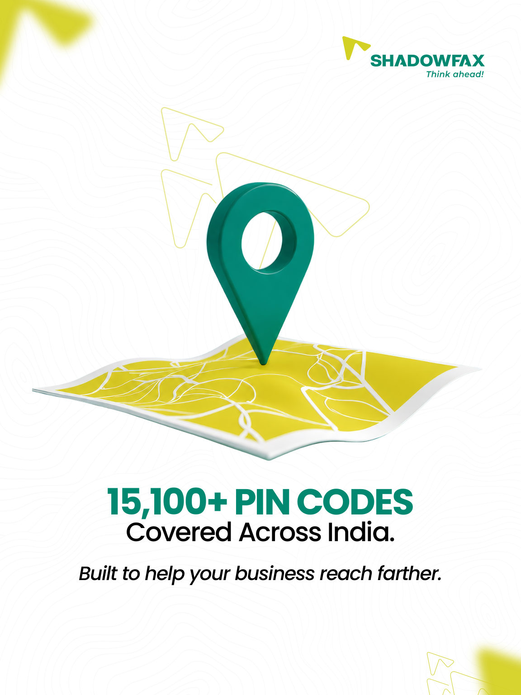
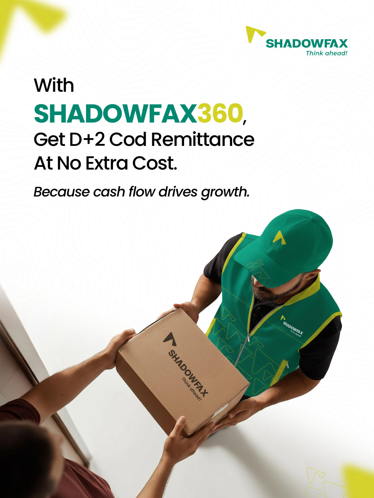
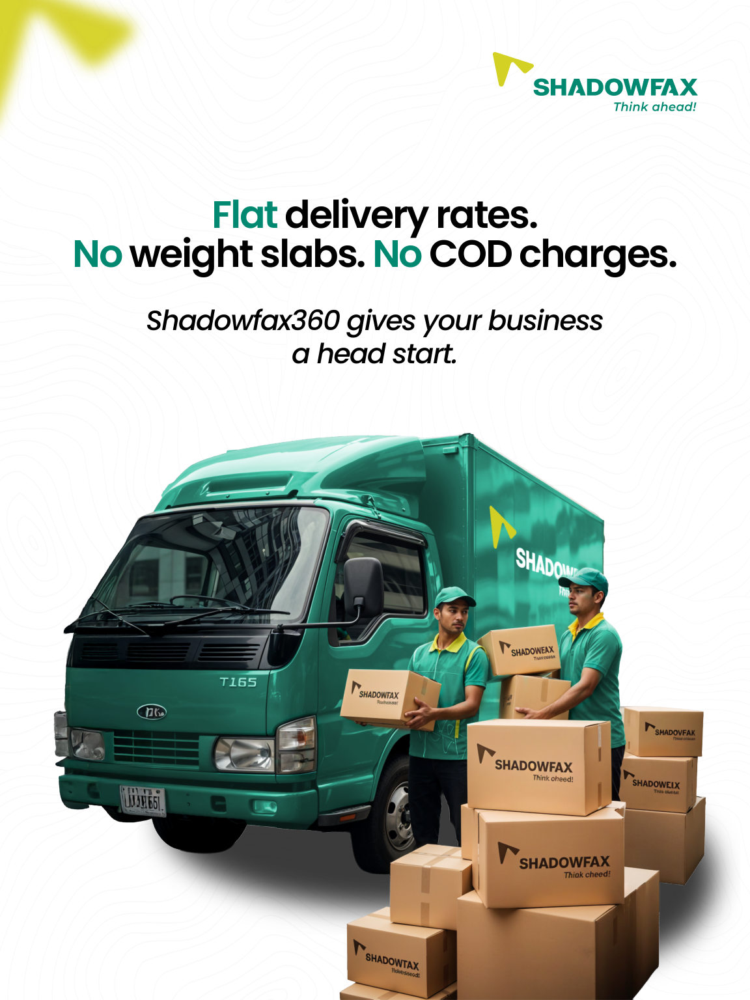

A green light for growing businesses.
A four-frame product carousel turning shipping capabilities into straightforward reasons for a small business to get moving.
- Context
- Shadowfax
- Project type
- Product campaign
- Deliverable
- 4-frame carousel
- Communication goal
- Make shipping benefits quick to scan
Case-study scope: Final sequence + visual rationale. The supplied source files do not specify individual responsibilities, collaborators or asset provenance, so those details are not inferred here.

Brief
The story begins with a green traffic signal and an invitation to start a business. Each following frame introduces a concrete part of the Shadowfax360 offer: nationwide PIN-code reach, D+2 COD remittance and a flat-rate delivery proposition.
Key decisions
The visual direction keeps the offer easy to scan: a single dominant image on each frame, high-contrast green headings and generous white space. The green signal becomes a simple visual shorthand for getting started.
The opening
A traffic light leads the first frame, making “green light” both the campaign hook and the main visual.
The rollout
A location pin, delivery handoff and logistics vehicle carry the progression from reach to payments to shipping costs.
The takeaway
The final frame closes on a compact explanation of flat delivery rates, no weight slabs and no COD charges, as stated in the original creative.
The full sequence.
Every frame from the supplied design is shown below in reading order. Open any image to view it at full size.


